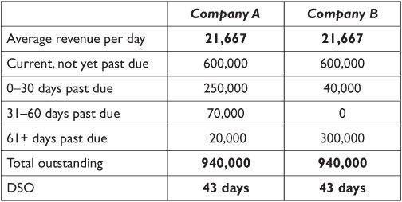
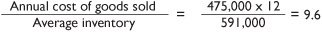
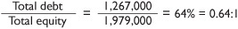

Key Performance Indicators: Finding the “Hidden” Information
In the first edition of this book, this chapter was entitled “Critical Performance Factors,” a term I’ve used with clients and workshop audiences for many years. But in the ensuing years a more widely used label has gained acceptance, so I’m using the more commonly used label to avoid confusing readers, thus, Key Performance Indicators (KPIs).
Now that you’re familiar with all the foundation financial statements that most companies use, you may feel pretty well prepared to understand how a company is doing financially. And you’d be right, compared with most folks. Since most companies don’t prepare all those reports every month and people who read them often don’t really understand how much information they contain, you are decidedly ahead of most of your peers in this area. And since you likely don’t plan to become a financial analyst, you might feel comfortable with what you’ve learned so far. Why then would you even want to go digging for “hidden” information that isn’t on the basic financial reports? Why KPIs?
The answer is ... It depends.
If you run the company or are in a senior management position, you do it because your banker will want to see the information. And your other lenders. And your investors. And your auditors. And the securities analysts who follow your stock. They all want to see them, because they want to see what’s behind the basic financial statements, the strengths and weaknesses of your company that don’t appear in bold type in your statements, or the accompanying footnotes. And if they go there, you want to be there first, to understand that information before they do.
If you’re employed by the company, you do it because you may want to know how healthy it is beyond the rumors in the halls and the muffled comments in the washroom. If the company is in dire straits and needs to cut costs tomorrow, you might want to know that. If the company’s foundation is as solid as the Rock of Gibraltar but it doesn’t yet show up on the income statement, that might influence how much you put into your 401(k) or the company pension fund.
If you’ve invested in the company or are considering investing in it, you can look at KPIs because you can readily see how knowing things that other people don’t know—good or bad—can make you look smart or keep you from being the last one out the door. Hidden information is what many insiders make their buy and sell decisions on—and what many people probably couldn’t understand if they had it. But with the tools discussed here, you can.
OK, so the answer isn’t “It depends.” The real answer is that you always want to have this information, because it gives you insights, options, and alternatives that you aren’t going to get elsewhere. It gives you information that gets to the root causes of problems only hinted at in the basic financial statements—information that can give you not only the sources of problems, but also important clues as to the solutions.
What Are KPIs? Do They Mix with Water?
KPIs are the performance metrics that enable us to look at the relationships in a company’s financial numbers in a new way. KPIs are best accompanied by a benchmark, a standard against which the metric is compared to see if the company is doing better or worse than was expected or hoped for. The result is an insight that we didn’t have previously about an area that’s important to us.
Measures of Financial Condition and Net Worth
The measures of financial condition and net worth metrics relate to the company’s balance sheet. They calculate the company’s financial strength at a point in time (remember the “pause” button in Chapter 2?) to give us a sense of how well the company has used its resources to build stockholder value. This section discusses some of the most common measures of financial condition and net worth you are likely to encounter.
PRICE/EARNINGS RATIO
An investor follows a stock’s price/earnings (P/E) ratio, which is a KPI of the stock’s price performance.
If you’ve ever bought one of those investment newsletters—the ones that charge you to tell you how to invest what you have left after paying their subscription fees—you’ve seen the term P/E ratio many times. A P/E ratio is the relationship between the price of a share of stock and the slice of the company’s earnings attributable to that same share of stock. (We talked about this in Chapter 4.) The P/E ratio is a favorite way to estimate if the price of the stock is too high in relation to the amount of money the company is earning. You might read that Walmart carries a P/E ratio of 32 and the analyst considers it overpriced at anything over 20. In this example, the metric is P/E ratio, the current reading is 32, and the benchmark is 20. You quickly have a lot of information about the company’s earnings that didn’t appear on its income statement. That’s the power of a KPI.
Current Ratio
This is perhaps the second most commonly used KPI in business today, after the price/earnings ratio. The purpose of the current ratio is to assess the liquidity of the enterprise—its ability to generate the cash needed to maintain operations. The current ratio is usually presented as two numbers separated by a colon. Using the data from Wonder Widget’s balance sheet in Figure 3-1, the arithmetic to arrive at the numbers goes like this:
This metric is the relationship between current assets (which are cash or will become cash within the next 12 months) and current liabilities (debts that must be paid within the same 12 months). (You’ll recognize the terms “current assets” and “current liabilities” from the discussion of balance sheets in Chapter 3.)
Current ratio A comparison of current assets and current liabilities, a commonly used measure of short-run solvency—the immediate ability of a company to pay its current debts as they come due. The current ratio is particularly important if a company is considering borrowing money or getting credit from suppliers.
Since current liabilities must be paid out of current assets, having a ratio of 1:1 should be OK, right? Wrong. That would seem logical on the surface, but let’s look at this for a moment.
Current liabilities are bills with a firm due date and the requirement to pay them in full—all of them. Current assets probably consist of some accounts receivable and inventory. Do you recall the discussion about these assets in Chapter 3? They don’t always deliver 100 cents on the dollar. Sometimes customers pay late and sometimes they don’t pay at all. Sometimes inventory sells for full value and sometimes it becomes worthless or simply disappears. So a company needs more than $1 of current assets to cover $1 of current liabilities. Most banks want to see ratios of 2:1 or better to give them adequate reassurance that the business will have the cash needed when it’s time to write checks. This standard varies by industry, of course, because different industries have different working capital risk characteristics.
Quick Ratio
This is a variation of the current ratio, with a slight twist. The quick ratio removes inventory from the current ratio’s calculation, on the assumption that inventory returns to cash more slowly and with more risk than other current assets. Do you remember the bad things that can happen to inventory while it’s sitting around waiting to be sold? And that doesn’t count the added time and cost that must be put into raw materials before they can become finished goods that can be sold. So removing inventory from the ratio results in a total for current assets that will more quickly become cash. The quick ratio thus becomes a more conservative version of the current ratio and is calculated this way:
Typically lenders look at the quick ratio rather than the current ratio if they believe a company’s inventory carries a higher-than-normal risk or is a higher percentage of current assets than they consider wise. For the same reason as the lenders, company management should keep an eye on this ratio if the company carries large inventories to ensure it’s maintaining adequate liquidity regardless of inventory levels. If the current ratio should typically be 2:1 or better, the quick ratio might need only to be 1.3:1 or better, since it will become cash more readily, so less of a safety margin is required for prudent management.

Quick ratio A measurement similar to the current ratio, except that the current assets calculation excludes inventory, which turns over more slowly and has more risk of deterioration. The quick ratio is thus a conservative version of the current ratio.
Days Sales Outstanding
We’ve emphasized prompt collection of accounts receivable numerous times in this book, not because we enjoy being redundant, but because it’s vital to so many aspects of a successful business. Therefore, it’s not too surprising that one key measure of liquidity deals squarely with that issue. Days sales outstanding (DSO) is the calculation of the number of days of average sales yet uncollected in accounts receivable.
The arithmetic looks like this, again using Wonder Widget’s balance sheet on Figure 3-1 and its income statement in Figure 4-1:
The DSO calculation tells you how closely the company comes to adhering to the payment terms printed on its invoices. Ideally, a company sells its products or services with 30-day terms, and customers pay the invoices 30 days later, so the DSO would consistently be 30 days. Most companies offer 30-day credit terms, yet the average DSO for companies nationwide is in the neighborhood of 45 days, with some companies experiencing even longer delays. With that in mind, a standard anywhere in the 40- to 50-day range is probably acceptable in most cases. By itself, DSO doesn’t tell the whole story. To be certain there isn’t a problem, this metric should be reviewed along with the age of the accounts.
Days sales outstanding (DSO) A measurement of how closely the overall collection of accounts receivable is to the invoice terms. DSO is calculated by dividing accounts receivable by average daily revenue.

WHEN A DSO OF 43 IS BAD
A 43-day DSO isn’t so hot if everything is late and getting later!
Here are two examples of companies with accounts receivable, presented based on the length of time the accounts have been outstanding:

Company A shows a typical status of accounts receivable, as some customers pay on time, others take a while longer, and a few stretch out pretty far, a typical scenario. There’s no problem with a DSO of 43 days. Company B’s customers typically pay more promptly than Company A’s, but nearly a quarter of Company B’s accounts are way out at 61+, clearly indicating they don’t intend to pay normally. The DSO is still 43 days, but there’s a big problem!
Always look at both the DSO and the age distribution of the accounts, the detailed report showing how long customer balances have been outstanding, before concluding that everything is OK. That detailed report is called the Aged Trial Balance of Accounts Receivable.
Inventory Turnover Ratio
For all the reasons mentioned earlier, the faster inventory is sold, the better for everyone watching the income statement and the bank account. If inventory is selling, it’s usually not getting spoiled, broken, or lost. That’s why companies try to keep their inventories as low as possible, consistent with an ability to promptly service customer orders. A key metric, therefore, is inventory turnover—how quickly inventory leaves the plant and is replaced by new inventory. The measurement looks like this for Wonder Widget:

If Wonder Widget’s inventory turnover ratio is 9.6, then inventory is being replaced on average 9.6 times a year, and there’s a little more than one month’s inventory on hand at all times (actually 1¼ months’ worth, or 12 ÷ 9.6), on average. You’ll note, incidentally, that we didn’t give you enough history to compute average inventory or annual cost of sales, so we used what we had, one month’s cost of goods sold multiplied by 12, and the inventory balance shown on our sole balance sheet. This calculation is subject to less misleading fluctuation if you use a broader period of time for this metric.
Measures of Profitability
These metrics evaluate the company’s earnings by calculating various relationships between elements of the income statement and other numbers. The intent is to measure the company’s earnings performance, that is, how well its resources are working to produce profitable transactions.
Gross profit margin Gross profit (net sales minus either cost of goods sold or cost of sales) as a percentage of gross sales or revenue. Also known as gross margin.
Gross Profit Margin
Gross profit is the amount of money earned from selling the product or service and paying the actual costs of making the product or providing the service, as discussed in Chapter 4. Gross profit margin (or simply gross margin) converts that amount into a percentage of gross revenue. We use the income statement from Figure 4-1 for illustration purposes:
Gross margin is an important number because keeping Wonder Widget profitable requires that it make a profit on what it sells, before costs of engineering, marketing, and administration. Watching this metric over time is critical because there are so many components that typically affect it that cannot be controlled or managed easily. The amount of employee overtime spent to rush a past due order out the door affects gross margin, as does the cost of reworking a manufactured part because an inexperienced worker spoiled it.
Net Profit Margin
Net profit is the amount of money the business has earned after selling its products and paying all the expenses of the business. This is the real “bottom line.” Net profit margin converts the net profit amount into a percentage of gross revenue, which, referring again to the income statement in Figure 4-1, looks like this:
Net profit margin Net profit as a percentage of gross revenue.
Net profit margin presents interesting analysis opportunities. By itself, it doesn’t tell you much about the business’ profit performance. A net profit margin of 3 percent in a mature software or drug manufacturing business would be pretty bad, but the same percentage in the supermarket business would be considered phenomenal. The value here, as with so many financial metrics, comes from comparison against a standard. In this case, the meaningful comparisons would be (1) with other companies in the same industry and (2) against a company’s own historical profit margins. Both are valuable to different groups, but for different reasons.
If you’re part of the management of a publicly owned corporation, you’re probably very interested in the comparison with other companies. For such companies, net profit margin is published in the financial press and, to some extent, it affects the price of the company’s stock. If you hold stock or options in the company, of course, you may be affected personally as well as professionally.

THE GROWTH CURVE SIGNIFICANTLY AFFECTS PROFIT EXPECTATIONS
Note the reference in the text to a “mature” software or drug business. Now think back to the company lifecycle chart in Figure 2-1. It’s important to remember that start-up or relatively new companies can’t deliver the same kind of profit performance as successful, mature companies that have most of their infrastructure in place.
A new company must spend money to establish its initial market presence and its branding, to build production capacity, and to strengthen its management team. These costs often lower its profit margins below those of a more established company that may be inherently less profitable, but that has already absorbed those costs. This is why, to understand the real strength of a company, it’s key to access historical trends that may show profit improvement and future business plans that may show the level of profits attainable after these costs have been incurred.
By contrast, if your company is privately owned and you have a management role in delivering profit performance, you’re probably most interested in current performance compared with past performance, because continuous improvement in this metric probably means management is doing a good job.
Costs per Sales Dollar
Various ratios show costs per sales dollar, such as sales and marketing costs per sales dollar and general and administrative (G&A) costs per sales dollar. These are two examples of the kind of ratios that can be applied to any number of operating expense items for which company management wants to tie expense growth to revenue growth or to ensure that expenses don’t erode profit margins. The arithmetic looks like this, if you use our income statement data for one of these calculations:
This same ratio could be developed for G&A, R&D, or any other grouping of operating expenses. Many companies, once they’re established and their infrastructure investment is behind them, associate growth in certain expense categories against planned revenue growth during the same period. This, then, becomes a useful way to track progress in those cost control areas.
Measures of Financial Leverage
These metrics are related to the measures of financial condition above, in that they’re based primarily on the balance sheet. However, these metrics fulfill a specific purpose: to determine how well the company is succeeding at using other people’s money to improve the amount of resources it has working to produce profitable transactions.
Debt to Equity Ratio
Recalling the discussion of ownership in Chapter 3, the assets used in a company are provided either by the owners through capital investment or by creditors through the money they lend to the company. The relationship between those two contributions is an important metric of a company’s financial health. The ratio that tracks that relationship, this time using the balance sheet information in Figure 3-1, is computed like this:

Debt to equity ratio A measurement that compares assets provided by the owners through capital investment to assets provided by creditors through money loaned to the company. To calculate this ratio, divide total debt by total equity. A variation used by some banks uses only bank debt and long-term debt in this calculation, omitting trade credit.
If a company has too much debt, there’s risk that a small reversal of fortunes may wipe out the owners’ equity entirely or render the company unable to service its debt. While this by itself may not sink a company, it pressures management to return to profitability or invest more owners’ capital in the business. Such pressure has often resulted in involuntary turnover in the management team, particularly at the CEO/CFO level.
By contrast, if the company has too little debt, management risks criticism that it doesn’t have enough capital at work earning profits for the company. Do you remember our discussion of leverage in Chapter 3? While too little debt is definitely better than too much debt, it does limit somewhat a company’s earning potential. We’ve seen how leverage can make a company more profitable and, therefore, more valuable.
As you can imagine, that there’s no “right’ number for this ratio. It depends on a number of factors, including:
 how effectively a company can use additional working capital and put it to work increasing profits by more than the cost of the additional resources;
how effectively a company can use additional working capital and put it to work increasing profits by more than the cost of the additional resources;
 the amount of long-term vs. short-term debt, since long-term debt gives a company more time to put the money to work before having to deliver the added profits to repay the debt;
the amount of long-term vs. short-term debt, since long-term debt gives a company more time to put the money to work before having to deliver the added profits to repay the debt;
 interest rates that impact the cost of money, since long-term debt is typically borrowed under formal lending agreements that bear interest, as opposed to trade creditors’ balances, which are generally interest-free; and
interest rates that impact the cost of money, since long-term debt is typically borrowed under formal lending agreements that bear interest, as opposed to trade creditors’ balances, which are generally interest-free; and
 how profitable the company can be in its industry, since a low-margin business can ill afford to pay high interest rates for additional capital, while a high-margin, high-growth business may be able to profit handsomely from every dollar it can get.
how profitable the company can be in its industry, since a low-margin business can ill afford to pay high interest rates for additional capital, while a high-margin, high-growth business may be able to profit handsomely from every dollar it can get.
Debt Service Coverage Ratio
This metric is useful primarily to bankers that lend money and to the companies that borrow it. Debt service coverage measures how well a company’s cash flow will succeed in making the payments on its interest-bearing debt. The calculation uses EBITDA (discussed in Chapter 4) as a quick substitute for cash flow, and actual debt service (principal plus interest) for the same period of time to determine how well debt service is covered by approximate cash earnings for the same period. Here’s a computation of debt service coverage:
The value of this ratio to lenders should be obvious. They usually have a minimum acceptable ratio, or at least closely watch trends because it’s important to them. They want to know they have a safe margin to ensure they won’t have a nonperforming loan on their hands in the event of a reversal in their borrower’s fortunes, however temporary. The borrower probably doesn’t look closely at this number, except when its lenders are looking at it and who would get upset if the ratio gets too low compared with expectations or if it falls below a loan requirement. If you’re the borrower and cash flow is tight, you want to watch this one closely, so you’re aware of it before your lender calls you. If you have invested in a company with bank debt and a troubling metric here, be prepared for the possibility of an announcement about debt restructuring or other lender intervention unless this turns around quickly.
Debt service coverage ratio A measurement of a company’s ability to make the payments on its interest-bearing debt through its cash flow (as approximated by its earnings before interest, taxes, depreciation, and amortization—EBITDA). To calculate debt service coverage, divide EBITDA by the loan payments (principal and interest) on its bank debt. The lower the ratio, the greater the debt burden on the company. Most banks require a ratio of at least 1.2, often building that requirement into loan agreements. Variations occur here as well, with some banks using pretax income instead of EBITDA in their calculation.

FIND ANOTHER BANK
One of my firm’s clients was in the midst of a turnaround when the megabank holding the mortgage on their building notified them that a penalty interest rate would be assessed with their next payment because they had for some time been out of compliance with the debt service coverage ratio. The penalty interest rate in the fine print of their mortgage loan agreement effectively doubled their already above-market interest rate. This was a clear message from their bank to find another lender, and do it quickly. Needless to say, they did.
Return on Equity
The last metric in the financial leverage series is one that is most meaningful when evaluating publicly owned companies. Return on equity measures the rate of return on the stockholders’ investment in the company. Referring this time to both Wonder Widget’s balance sheet and its income statement, we come up with this calculation:
Unlike some of the other measures, ROE is a bit artificial for two reasons. First, owners’ equity bears no relation to what the owners actually paid for their stake in the company. Second, owners’ equity bears no relation to what they could sell it for. Other than that, no problem!
Return on equity (ROE) A measurement of the rate of return of the stockholders’ investment in a (usually) publicly owned company. ROE is calculated by dividing annualized net income by stockholders’ equity.
So is the ROE useless? Not at all. It serves us well as a measure of a company’s earning power, even if only a theoretical comparison is possible. Since the same limitations apply to all companies, the calculation enables a company-to-company comparison, which is useful when selecting stocks to purchase. Often investment advisors look at this metric to demonstrate the superior earning power of one growth company over another. As with any of these metrics, the pattern of change over time—see “Trend Reporting” below—enables us to see a company’s progress against its own history.
Measures of Productivity Metrics
These metrics are a little different in that calculating them often requires numbers that don’t appear on the financial statements. They’re operationally oriented, intended to measure the performance of particular resources within the organization, e.g., its employees, to see if these resources are delivering the kind of results that contribute to improved numbers on the income statement and balance sheet.
Backlog of Firm Orders
In my mind, this is the most important metric that doesn’t come out of the company’s general ledger. It tells us how much business the company has sold that it has yet to deliver to its customers. There isn’t much arithmetic to this one. It comes from the company’s order entry system, it’s represented in the sales value of those orders, and it’s computed like this:
Backlog of orders = All orders received – All orders shipped and invoiced
For companies that ship orders that take some time to fulfill, such as most manufacturers and many distributors, this is a crucial measure of their immediate future. It’s also an indicator of the sales team’s success at keeping the production capacity of the company humming. Like any good metric, it comes with good news and bad news.
If the backlog falls over time, it can mean the company isn’t bringing in new orders as fast as it’s filling prior orders. A trend like that cannot continue indefinitely or the company will eventually have no orders to fill. It means either the production department is very efficient or the sales department isn’t. It would be important to find out which it is and fix it because in the long run it’s not healthy.
If backlog increases over time, that could be equally undesirable. If the sales staff is bringing in orders so fast that the production department can’t fill them, customers will be unhappy and may take their business to a competitor. This will hamper the sales department’s continued success and dampen salespeople’s enthusiasm. Of course, in a rapidly growing company, this may simply indicate an urgent need to put more production capacity into place.
The objective of the Sales Department should be to continue to build the backlog, while the objective of the production department—and this includes salespeople and drivers in a distributor’s office and service providers in a service business—should be to deliver on orders faster than salespeople can bring more in. Management’s role, then, is to beef up whichever side is falling behind, so that backlog is where management wants it to be. Where should that be? It depends. You could say that the backlog should be measured by how long, on average, it takes to bring in an order and fulfill it, relative to the customer’s expectations.
In reality, I can’t recall ever hearing a company say its backlog was too high. Too old, maybe. Too difficult to fulfill, sure. Too unprofitable to fret over, unfortunately, yes. But too high? Nope, never. Companies use backlog to measure the success of their sales efforts. I recommend to clients they build a measurement of backlog into the incentive plans of their top sales and marketing executives, and that they track it regularly and visibly.
Late Backlog
This subset of the backlog is a ratio that companies have found useful in spotting upcoming problems with customer satisfaction. It’s the percentage of backlog that’s behind the customer’s desired delivery schedule. This ratio it is most useful when it’s calculated customer by customer. Calculated in sales dollars but presented as a percentage, it looks like this:

It doesn’t take much thinking to realize that customers expect their goods to be delivered when they asked for them and when you promised to deliver. An aerospace manufacturer that doesn’t get parts on time from a supplier can’t deliver airplanes to its customer on time. A retailer who has advertised a big sales event will be unhappy if the goods don’t arrive in time for the sale. While those examples may seem extreme, they happen frequently, particularly in our increasingly just-in-time-focused economy. What this metric tells you is the volume of a given customer’s orders that have not been shipped when promised. If that number grows, you’re at risk of having a shipment rejected and returned, and possibly losing a customer.
Order Processing Time
Another metric that doesn’t require complex calculations but can impact a company’s success is the time to process an order. This one isn’t for everyone, but when it fits, it’s a great way to build and measure customer satisfaction. Once a customer has placed an order, they have an expectation of when it will be fulfilled. As the seller, you have an obligation to accept orders that fit within your ability to process them and to meet expectations. As noted above in the discussion of backlog, if you don’t meet your customers’ delivery expectations, you’d better be the only source in town—or your customers will soon be shopping for another supplier.
While this metric is most obviously suited to distribution companies with a short production process, it can also apply to manufacturers with a firm enough handle on their production times—e.g., standard stock items rather than custom manufacturing processes—to be able to make reliable estimates of delivery dates.
This measurement is usually presented in terms of days elapsed from the time a company representative receives the order until the order ships to the customer. It can be adversely affected by a number of functions within the company—sales, order entry, credit, production, quality control, and shipping, not to mention the delivery service you use. Management’s goal is to coordinate all these activities so employees work together toward the mutual objective of satisfying the customer, rather than trying to avoid blame if the order is late.
Sales per Customer, Sales per Employee, and Sales per Square Foot of Floor Space Metrics
Each of these three metrics measures the productivity of the sales effort—how well a company spends its sales dollars. They’re important measures and easy enough to calculate, although often hard to change. Each metric is used when appropriate, based on the sales model. All can be useful in a retail environment. Some are only useful for a retail business. Let’s look at each metric briefly.
Sales per customer is useful when a company finds its cost to process an order is fixed or at least controllable. In that case the company can increase profits significantly if it can increase the average amount a customer buys, because there may be little or no increase in the costs of making the sale (beyond the actual cost of the merchandise, of course).
Sales per employee is most useful when the department or company is strongly sales-driven. Retail sales organizations often fall into this category. In some companies, the entire organization is encouraged to think in terms of sales, while in other companies the sales department is the prime mover. However this metric is used, it helps when assessing the effect on sales of adding another employee or when comparing one branch office or division with another. When applying this measure, CEOs need to recognize the differences and similarities among departments or divisions. Some business models are different enough that they cannot efficiently be compared on a sales-per-employee basis, and to do so would inhibit one business model or the other from operating most effectively in its market.
The sales per square foot metric is used almost exclusively in retail stores and restaurants, where stores must use every foot of space productively, space is limited, and the contribution of a product display can be measured by how many sales it produces per foot of space it occupies. This is commonly used by chain store management to compare the productivity of one store with another. This metric often accounts for your favorite food product disappearing from your supermarket’s shelves; it didn’t generate enough sales volume to justify a place on the shelf. Again, absolutes may not be possible because of the different locations and the demographics of their areas (higher or lower income, younger or older, blue collar vs. white collar, and so on).
Trend Reporting: Using History to Predict the Future
Most people who read financial statements look only at the monthly or annual reports, and most of those reports present their period data in comparison with the period immediately prior or the same period a year ago. The more enlightening reports compare results against a budget, which is a carefully considered benchmark in its own right. (See Chapter 12 for more on budgets.)
But in all these cases there’s a flaw in the lone comparison that can prove dangerous over time: It overlooks the fact that a small flaw, a minor deterioration from the prior period, a tolerable budget variance, if repeated over a series of past and future periods, can become a major surprise when taken cumulatively. When the surprise is pleasant, everyone can laugh and say, “How weird we didn’t see that earlier!” When the surprise is unpleasant, however, the tendency is to begin a frantic search for answers. “How did this happen?” “When did this happen?” “Why didn’t we know it was happening?”
What We Learn from Trends
The most important things we learn from studying trends are clues to the future. In high school physics, many of us learned the principles of Newton’s first law (the law of inertia): An object in motion tends to continue in motion in the same direction at constant speed unless acted upon by another force. (That may not be exactly what your teacher said, but it’s close enough for our purposes.) Of course, the object your teacher used to make this point wasn’t being bumped around by market forces, interest rates, recessions, and human intervention and emotions, or its path would have been a lot more erratic. So, too, the paths of many of our economic indicators are often erratic, but that doesn’t change the validity of studying their trends so we can try to estimate where they might go in the future.
As it turns out, a strong sales effort that brings in good sales numbers tends to continue to do so, given no radical changes in its environment. A company whose costs are rising slowly and steadily because it doesn’t effectively control them will likely continue to see its costs rise until it takes some action to disrupt the trend. Human nature being what it is, costs without controls are more likely to rise than to fall, so studying cost trends is useful to enable management to identify those trends soon enough to keep the cumulative effect within acceptable limits.

LESSONS LEARNED FROM THE STOCK MARKET—OR MAYBE NOT LEARNED
Much stock market analysis and commentary are based on the premise that what happened in the past may be projected to some degree into the future—with all the usual caveats that the analysts don’t guarantee that any of this is true or predictable or even relevant. We’ve learned how inaccurate they can be in predicting the future from the past, but there are ample stacks of evidence to suggest the premise is true, even if the application in specific instances is decidedly imperfect. Anyone who has studied technical stock market analysis can point to countless examples of stocks acting pretty much like they did before, given similar market influences. The trick is to judge with acceptable accuracy the variation between past experience and future expectations.
The 6 to 12 Rule
I’ve found that the most effective way to follow a company’s trends is to use an easy-to-read format that shows a series of months or weeks of metrics on a single page as part of a regularly published, monthly or weekly management report. How much should you pack onto that one page? If there’s too much information on the page, it’s overwhelming to those uncomfortable with financial reports and is likely unread. If there’s too little information, it raises more questions than it answers, with resulting delays in taking action.
The ideal combination, in our experience, is a page with 6–12 metrics presented over the past 6–12 periods where the metric is represented by numbers, or up to a year’s data if represented in graphic form, along with the benchmark or standard most appropriate for each metric. That could be the budgeted result at year-end or the ratio set out in the company’s lending agreements or the amount needed to take the company to the next growth level. Figure 7-1 (page 116) shows a representative KPI trend report for a manufacturing company.
In addition to KPIs, certain financial statements should always be prepared in a 12- or 13-month trend format, in addition to the standard formats produced by most accounting systems. At a minimum, because of their importance in reviewing operating results, an abbreviated income statement (shortened to one page) and a statement of cash flow (also only one page) should be a part of every monthly financial package the accounting department produces. These two reports provide so much insight with a quick scan that they are often reviewed instead of the static current month reports typically produced by accounting software.
Which Metrics to Track? Where Do You Want to Go This Year?
Which metrics are most meaningful to a company depends on a series of factors, including management goals and objectives, problem areas that bear watching, and improvement projects under way. A sales-driven company may be heavy on sales-related indicators, while a company deeply into research and development of leading-edge products might have metrics related to development timetables and costs. Since KPIs are short-term metrics, they primarily relate to improvements desired and controls needed in the current year. Longer-term goals are best set forth in a company’s business plan (see Chapter 9) and built into KPIs only for the current year of the long-range plan. However, the name really says it all. KPIs should be key factors for the business and they should relate to performance. Here are some areas to consider for such a report:
 Sales trends. Number of orders received, dollar volume of orders received, backlog changes, RFPs responded to, sales per whatever (customer, employee, square foot of floor space, and so forth), sales staff in the field, volume of orders shipped, etc.
Sales trends. Number of orders received, dollar volume of orders received, backlog changes, RFPs responded to, sales per whatever (customer, employee, square foot of floor space, and so forth), sales staff in the field, volume of orders shipped, etc.
 Operations trends. Average days to ship an order, overtime or premium hours paid (manufacturers), percent of jobs proceeding on time (job shops), number of orders shipped on time or late, backlog in dollars, etc.
Operations trends. Average days to ship an order, overtime or premium hours paid (manufacturers), percent of jobs proceeding on time (job shops), number of orders shipped on time or late, backlog in dollars, etc.
 Financial trends. DSO for receivables, average payout period for payables, cash balances, bank credit line status, invoicing timeliness, financial reporting timeliness, purchase discounts taken vs. discounts offered, etc.
Financial trends. DSO for receivables, average payout period for payables, cash balances, bank credit line status, invoicing timeliness, financial reporting timeliness, purchase discounts taken vs. discounts offered, etc.
While trend reports are most compact if presented in a tabular format, they are often easier for nonfinancial managers to read if presented in a graphic format—charts, curves, and lines convey powerful visual images of trends in ways that tables of numbers typically can’t. To keep such reports to the recommended single-page length, management may need to choose between a longer list of KPIs to track in tabular format and a shorter list in graphic format.
Manager’s Checklist for Chapter 7
 Key performance indicators (KPIs) are tools for tracking a business’ key indicators of success. KPIs are best accompanied by a benchmark or standard against which they’re measured. They must be computed separately, because in most cases they don’t appear in the basic financial statements.
Key performance indicators (KPIs) are tools for tracking a business’ key indicators of success. KPIs are best accompanied by a benchmark or standard against which they’re measured. They must be computed separately, because in most cases they don’t appear in the basic financial statements.
 KPIs are most effectively used when a company identifies its most sensitive areas in sales, operations, and finance and establishes goals or standards for each area to be improved. Common financial KPIs include measures of financial strength, profitability, liquidity, and leverage. Key operational KPIs include relevant productivity indicators. Sales KPIs should include sales backlog and sales force performance.
KPIs are most effectively used when a company identifies its most sensitive areas in sales, operations, and finance and establishes goals or standards for each area to be improved. Common financial KPIs include measures of financial strength, profitability, liquidity, and leverage. Key operational KPIs include relevant productivity indicators. Sales KPIs should include sales backlog and sales force performance.
 Trends tell us what a single piece of data can never tell us: what the future might look like. The trick is to capture the right KPIs and present them in 6–12 periodic readings, so it becomes easier to see where the trends are going and whether action should be taken to encourage or counter observed trends.
Trends tell us what a single piece of data can never tell us: what the future might look like. The trick is to capture the right KPIs and present them in 6–12 periodic readings, so it becomes easier to see where the trends are going and whether action should be taken to encourage or counter observed trends.